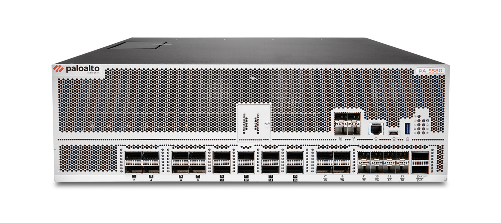

Welcome
Welcome to the Quantum Lunch and Learn, hosted by your Palo Alto Networks solutions consultants. Today, we will learn more about how our network security products can protect your organization from quantum threats.
Hosted by your Palo Alto Networks Solutions Consultants

Welcome to the Quantum Lunch and Learn, hosted by your Palo Alto Networks solutions consultants. Today, we will learn more about how our network security products can protect your organization from quantum threats.